2026.2.19現在
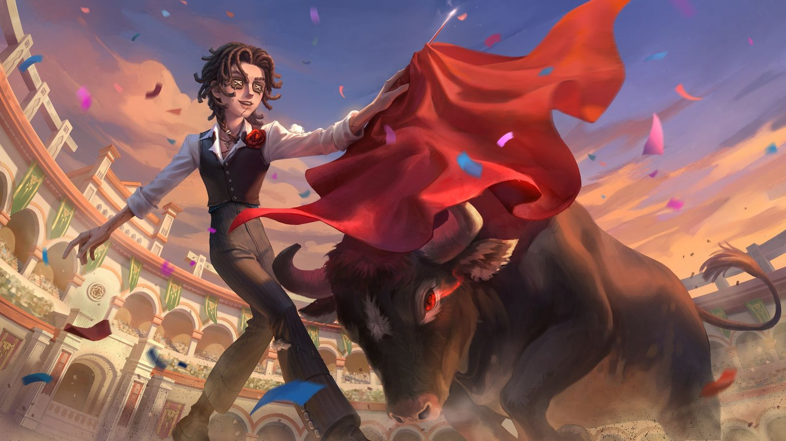
闘牛士がランク戦モードに追加されました！！
新サバイバー「闘牛士」がランク戦モードに追加されました！！ 688エコーまたは3568手掛かりでお買い求めいただけます。
闘牛士の能力はこちら第五人格に関する最新のアップデート情報をお届けします。

新サバイバー「闘牛士」がランク戦モードに追加されました！！ 688エコーまたは3568手掛かりでお買い求めいただけます。
闘牛士の能力はこちら新サバイバー「闘牛士」がショップに追加されました。 688エコーまたは3568手掛かりでお買い求めいただけます。
闘牛士の能力はこちら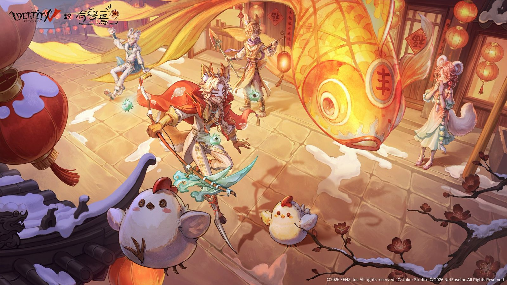

上記のコラボ衣装【SSR衣装】が1388エコーで購入可能!
上記のコラボ携帯品【SSRコラボ携帯品】が1068エコーで購入可能!
他にも盛りだくさんのコラボイベントが詳しくは下記のリンクから確認してね！！
コラボ情報の詳細はこちら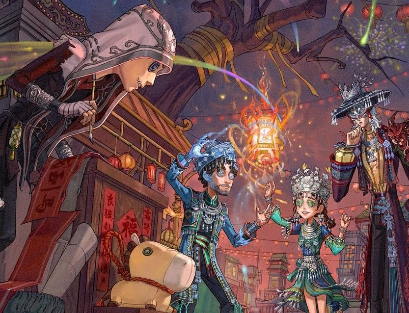
新春イベント「千灯が輝き 万家を照らす」の「錦灯煥彩」段階が2月12日より開放されます。 旧正月の「小年」前夜、灯祭の依頼でチャイナタウンを訪れた提灯持ちが新しい風を吹かせる物語が始まります。 SSR衣装解放カード、サバイバー共通携帯品-パカラッ、SR衣装傭兵-提灯持ちなど豪華ボーナスが入手可能です！！
灯祭会場のレイアウトをデザインしましょう。初めてデザインを「シェア」すると、【スタンプ】新年の挨拶を獲得できます。
毎日ログインして新年カレンダーに落書きを描くと、イベントログインが完了します。
期間：2026年2月12日メンテナンス後 ～ 2026年3月4日23:59ストーリーは8日間に分かれ、時間経過とともにアンロック。1日のシナリオ体験進度を完了するごとに灯祭の軽食×20を獲得できます。
6つの面・骨組み・下房からなる切り絵灯を自由にカスタマイズ。「展覧会にアップロード」で他プレイヤーと作品を共有でき、「プランコード」を使って他者のデザインを複製することもできます。完成した作品は居館家具としても設置可能。毎日初回制作で灯祭の軽食×10を獲得できます。
対戦に参加すると1日20個まで「灯祭の軽食」を獲得できます（個人最低達成条件を満たした場合）。軽食はSSR衣装解放カード、パカラッ、SR衣装傭兵-提灯持ち、スタンプ、特殊アクションなどと交換可能です。イベント終了後は未使用分が1:2の比率で手掛かりに変換されます。
ショップ期間：2026年2月16日0時 ～ 3月4日23:59期間中に任務を達成してなぞなぞランタンを解き明かすと、【アイコン】上元節を迎えるなどの報酬を獲得できます。全タスク完了で【特殊アクション】泣き虫-飴細工を獲得！
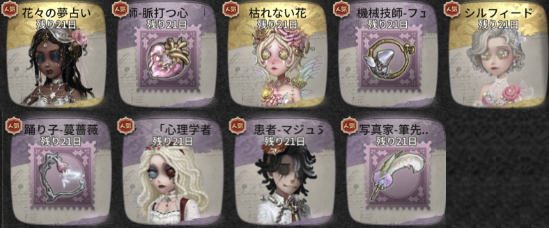
上記のコラボ衣装【UR衣装】が2888エコーまたは12888欠片で購入可能!
上記のコラボ衣装【SSR衣装衣装】が1388エコーまたは4888欠片で購入可能!
上記のコラボ携帯品【SSRコラボ携帯品】が1068エコーまたは3888で購入可能!
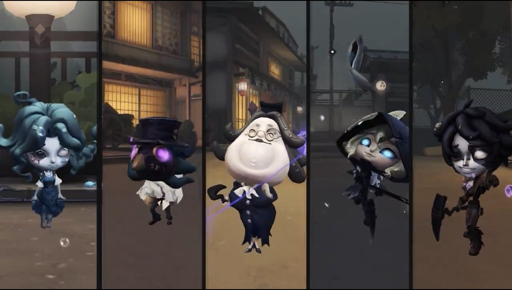
上記のペットはが888エコーまたは3188欠片で購入可能!
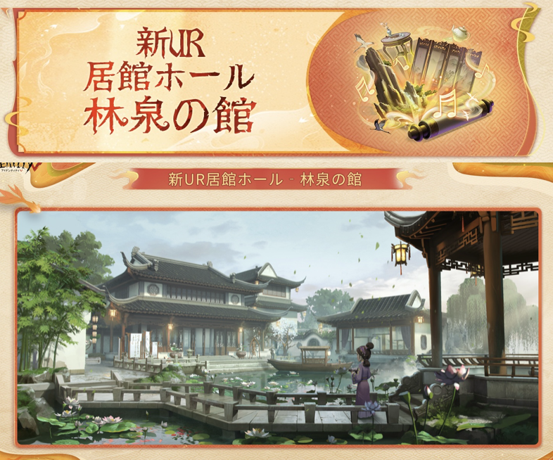
最新【居館ホール】林泉の館がショップに追加されました。通常価格は4888エコーですが、 初週は25%オフの3658エコーで購入できます！
【コピーキャットカーニバル】および【自由の仮面】モードに新身分が追加されました。
スキルを使用して、現在生存している演繹者の位置を確認できます。
勝利目標：演繹要求を55個達成、または模倣者を全員脱落させる。
会議中に被投票数を蓄積し、一定数に達するごとに他の演繹者を脱落させる能力を1回得られます。
勝利目標：演繹要求を55個達成、または模倣者を全員脱落させる。
任意のエリアに円形ステージを設置。ステージ内の他陣営演繹者は混乱状態（視界ぼやけ・音声制限）に陥ります。
勝利目標：多数の投票権を占有するか、突発事件-バルブ閉じを達成させない。
会議段階にゲームフィールドへ戻り、ヒントを元に身分を推理して演繹者を脱落させられます。2回の脱落成功またはエンディング条件達成で「エンディング」モード（65/75秒間）に突入し、移動速度上昇・クールタイムなしで脱落能力を使用可能に。
勝利目標：全ての演繹者を脱落させる。
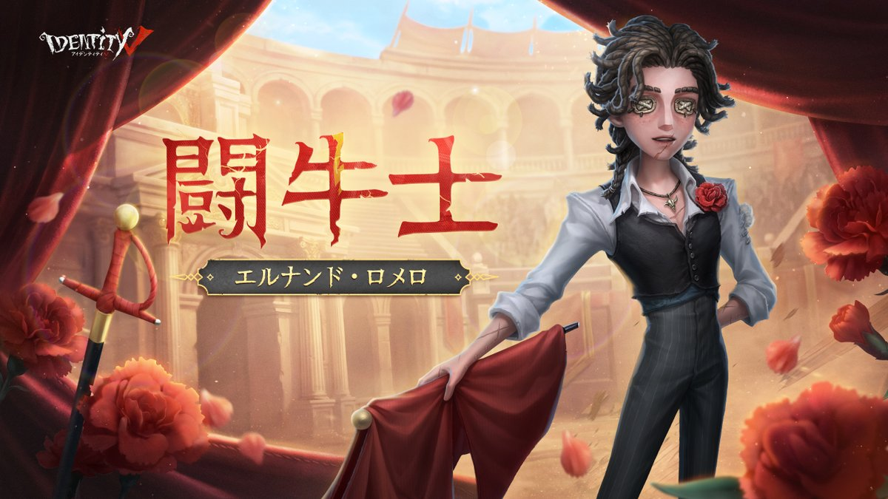
S41・真髄1が正式に開放され、【UR衣装】闘牛士-ダーザイン、【SSR衣装】祭司-白焔の兆、【SSR衣装】「ビリヤードプレイヤー」-幽夜の終章を含む新しい衣装が追加されました！！
闘牛士の能力はこちら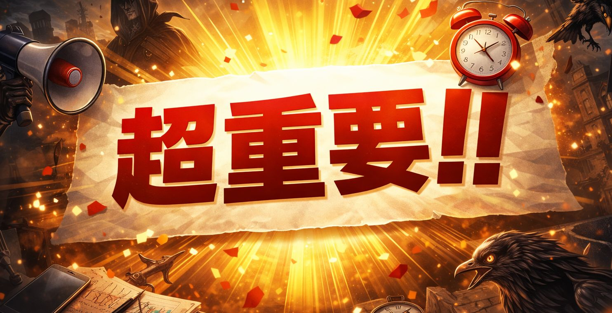
定型文設定において、エリア、キャラ、セット、スキルカテゴリーの定型文が追加され、順序の調整が可能になりました。
マップ内でスキル創造物を設置した際、「____（エリア名）に____（スキル創造物）がある」という即時定型文が自動的に発動します。
「____（ハンター名）が近くにいる」という即時定型文が自動的に発動します。98%に達した際、その暗号機を解読しているプレイヤーは「暗号機寸止め完了」という即時定型文が自動的に発動します。
自動化された内容が他にもたくさん絶対下のリンクから定型文チャットの詳細を確認してください！！
定型文チャットの詳細はこちら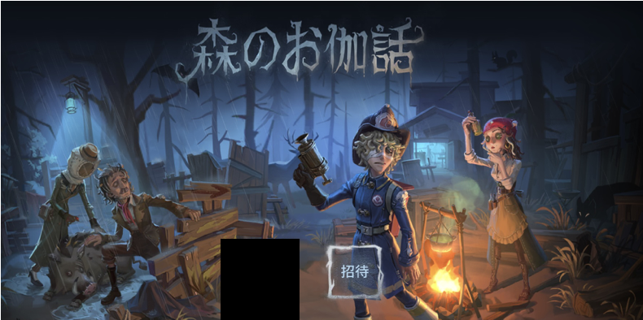
ランダムルール「高木は風に折らる」と「身軽」が削除され、ランダムルールが追加されました
森のお伽話モードの詳細はこちら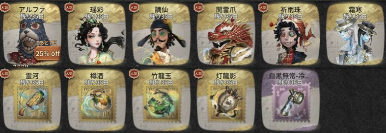
【UR衣装】オフェンス-アルファ、【UR衣装】漁師-瑶彩、【UR衣装】カウボーイ-謫仙、各それぞれの携帯品などが再登場！！
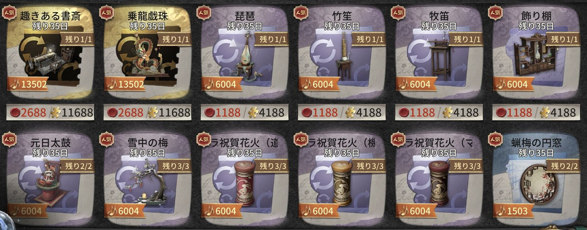
【UR家具】趣きある書斎、乗龍戯珠 【SSR家具】琵琶、竹笙、牧笛、飾り棚などが再登場！！
通常価格1646エコー、割引価格1316エコーでご購入可能！パック内容：【SSR衣装】機械技師-「鍵芯」、【SR携帯品】機械技師-「匣の中の憧憬」。
闘牛士の能力はこちら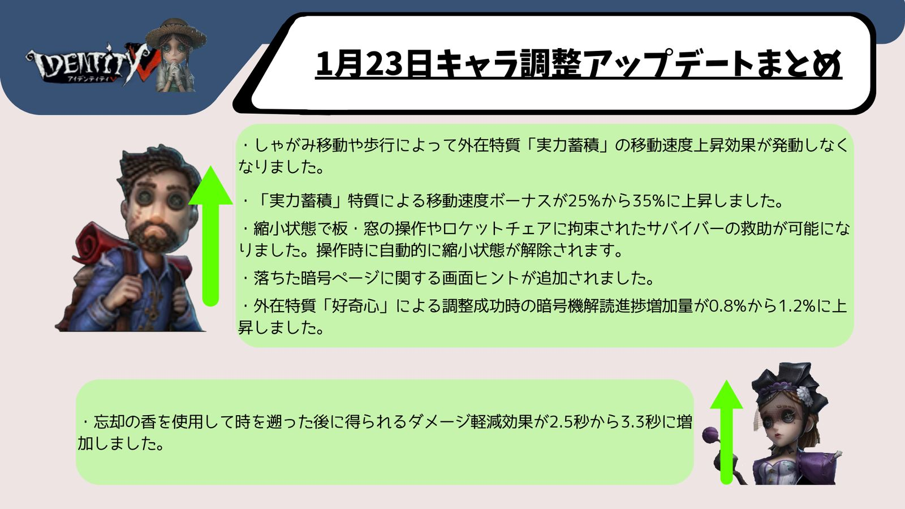
●冒険家、調香師、泥棒、患者、カウボーイ、応援団、バッツマン、幻灯師、結魂者、黄衣の王、夜の番人、「フラバルー」、時空の影、「ビリヤードプレイヤー」に調整が入りました。
ランク戦モードにて、7段星50以上のプレイヤーは、シーズンリセット後に五段Ⅰに変化します
イベント期間中にログインすると記憶秘宝・旧シーズン×10を受け取れます。
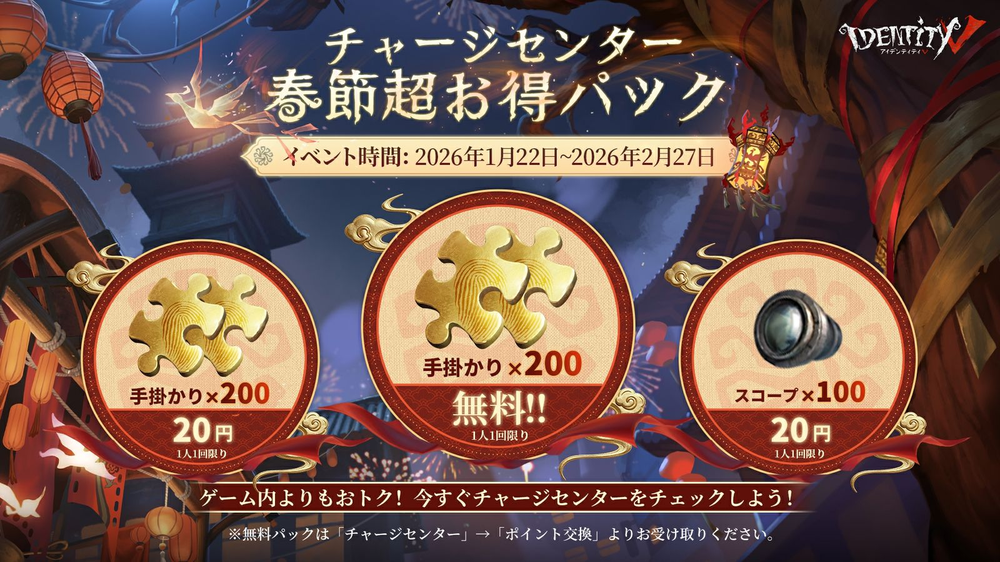
イベント期間中にログインやオンライン時間タスクを完了すると、大量の手掛かりとスコープのボーナスを獲得できます。
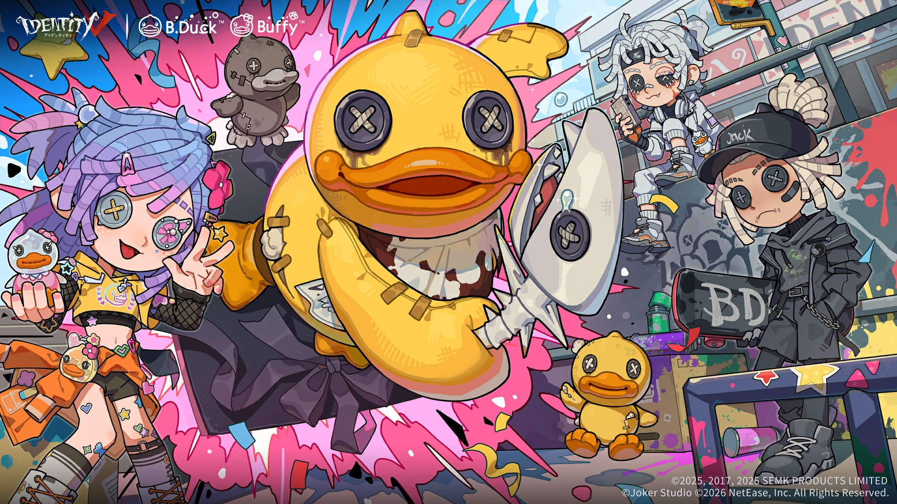
【UR衣装】ガードNo.26-B.Duck、【SSR衣装】傭兵-B.Duckトレンド、「囚人」-Rice、調香師-Buffyが再登場！！
詳細はこちら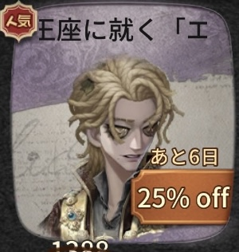
【SSR衣装】「騎士」-王座に就く「エドワード」が1388エコーまたは4888欠片でご購入いただけます。
タスクを完了すると【特殊アクション】泥棒-雪玉を投げる、【特殊アクション】機械技師-雪玉を投げる、【特殊アクション】冒険家-雪玉を投げる、【特殊アクション】玩具職人-雪玉を投げる、イベントアイコン【アイコン】雪合戦しよう、手掛かり、欠片、スコープなどのボーナスを獲得できます！

深淵の秘宝Ⅸの中にはUR衣装：写真家-「恒久の光」、SSR衣装：「レディ・ファウロ」-蒼白の冠、画家-藍色の暗面、「騎士」-気儘な歓歌、火災調査員-匣の中の焔、SR衣装：幻灯師-楽園の流離人、冒険家-陰謀論者、時空の影-恐怖の物語集、空軍-漆黒の神官が含まれています
詳細はこちら
祭典を上手に進めていくと、祭典ボーナスを獲得可能！！
祭典ボーナス：深淵の秘宝Ⅸ×20、【SSR衣装】記者-「流離いの帰途」、【SR衣装】隠者-聖河の管理者、【SRペット】グレーフェザーなど
深淵シリーズ衣装期間限定で再登場します。
【SSR衣装】踊り子-悪の花、【SSR衣装】野人-部品パートナーなど
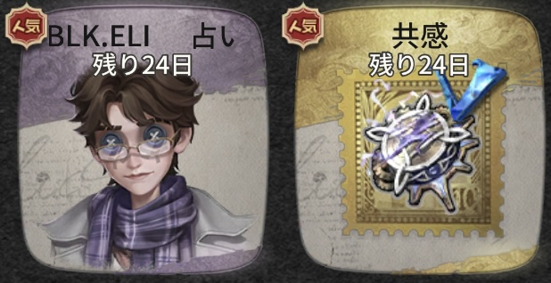
通常価格1646エコー、割引価格1316エコーでご購入可能！パック内容：【SSR衣装】機械技師-「鍵芯」、【SR携帯品】機械技師-「匣の中の憧憬」。
【SSR衣装】「悪夢」-ミスター・ハイドがショップに追加され、1388エコーまたは4888欠片でご購入いただけます。
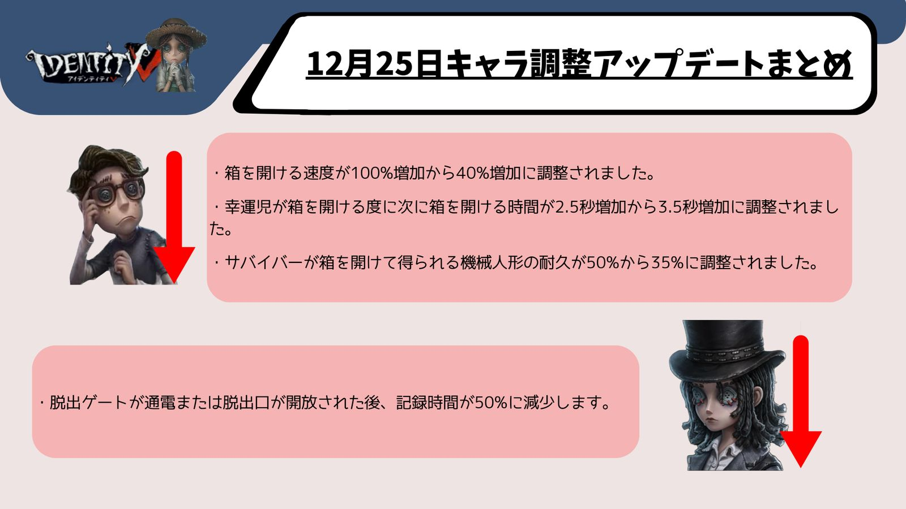
●幸運児、幻灯師、復讐者、リッパー、「フラバルー」、「足萎えの羊」、「女王蜂」に調整が入りました。
●癒合、観客効果が調整されました。
●幽閉の恐怖が調整されました。
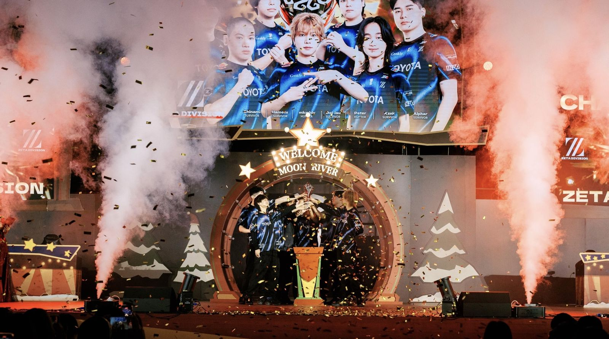
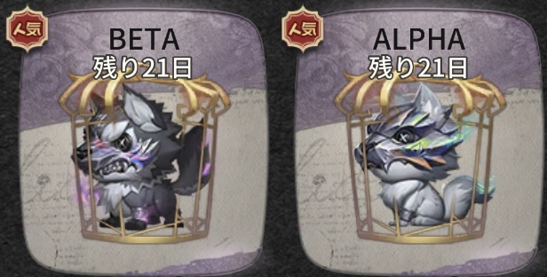
2025IJL秋季大会優勝――ZETA DIVISION戦隊限定ペット【ALPHA】、【BETA】
【携帯品】夜の番人-雷霆万鈞、骨董商-電光石火、ガードNo.26-雷太鼓が期間限定で再登場！

coaの新衣装や新コラボ、新サバイバーなど情報満載ぜひご覧ください！
第五人格情報発表番組～2025年クリスマス直前SP～の詳細はこちら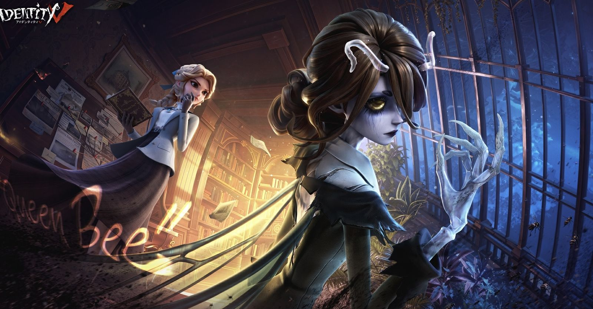
最強ハンターで暴れよう！！サバイバーはバンが必須！！
「女王蜂」の能力はこちら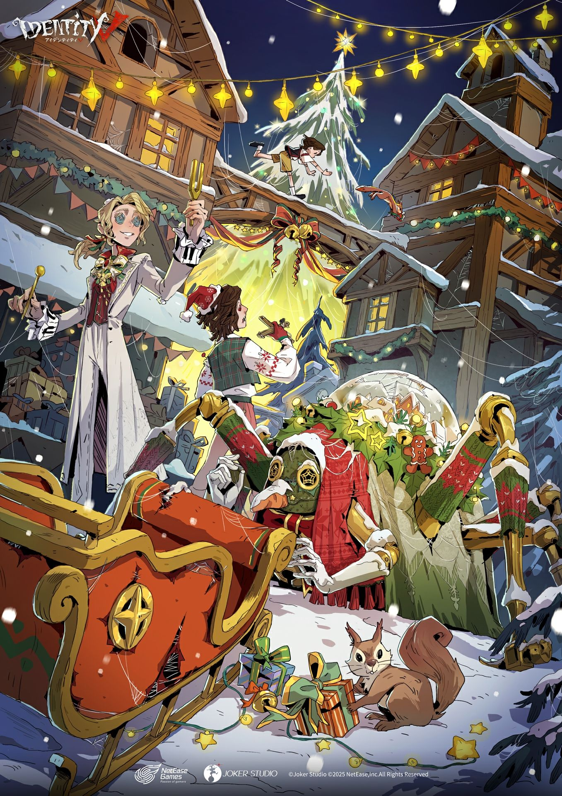
デイリーログインで【SSR家具】雪の精霊ドンドンと【アイコン枠】細雪の冬を獲得可能！
「積雪ギフト」の交換で【SR衣装】作曲家-聖夜の協奏曲または【SR衣装】人形師-雪のベルのどちらかを交換可能！
【SSR衣装】結魂者-雪夜に紡ぐ願いが1388エコーor4888欠片で購入可能！
詳細はこちら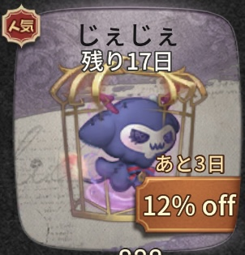
2025IJL夏季大会優勝――REJECT戦隊限定ペット【じぇじぇ】が888エコーで購入可能！！
最強ハンターで暴れよう！！サバイバーはバンが必須！！
「女王蜂」の能力はこちら
クリスマス衣装【SSR衣装】が1388エコーor4888欠片で購入可能!
クリスマス家具【SSR家具】が1188エコーor4188手がかりで購入可能!
クリスマス【SR衣装】が100スコープで購入可能!
詳細はこちら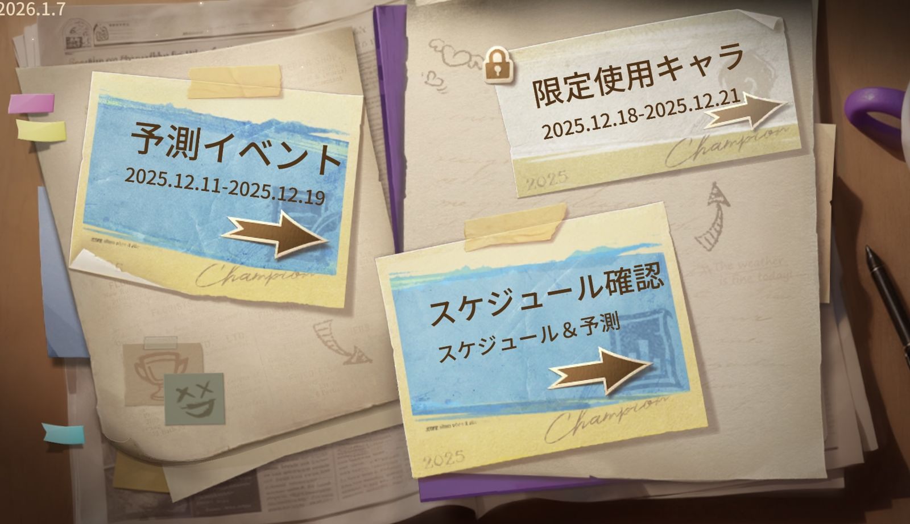
大会予測イベントに参加し、優勝戦隊の予測に正解した場合、金リンゴを2000獲得できます。FMVP選手の予測に正解した場合、金リンゴを2000獲得できます。不正解の場合も、参加ボーナスとして金リンゴを500獲得できます。
全ての予測に正解した場合、更にIJL2025秋季大会優勝パックを獲得できます。
イベント期間中、各試合前に勝敗予測イベントが開催されます。1問参加する度に応援値を100獲得でき、試合の勝者予測に正解する度に金リンゴを300獲得できます。

●「雪兎」、「ワピチ」、「リス」、「狐」、「ヤマカガシ」、「アナグマ」、「イノシシ」、「山猫」、「コウモリ」、蔓、竹の筒、霧吹き、木製スプリンクラー、シダ植物に調整が入りました。
その他の調整:バレット発射数増加・装備改良以外の強化アイテムを自分から捨てることができなくなりました。
詳細はこちら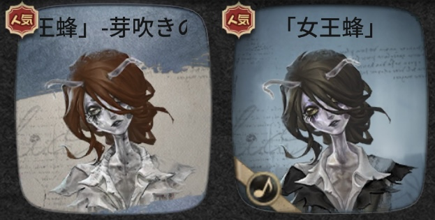
858エコー or 4508手掛かりで購入可能！
【SR衣装】「女王蜂」-芽吹きの廃都 が 318エコー or 1188欠片で購入可能！
「女王蜂」の能力はこちら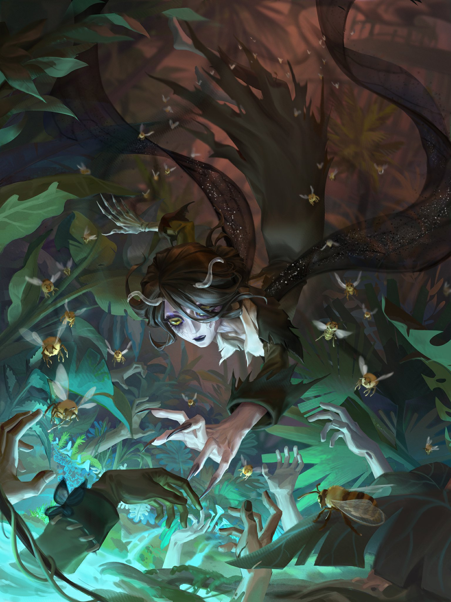
ゲームにログインすると【S40・真髄1】×10を受け取れます。
イベントモードに参加してイベントタスクを完了することで、 イベントコイン「記録」を獲得できます。「記録」はイベントショップで 【UR衣装】昆虫学者-囚われの願い、シーズン真髄×10、 【SSR携帯品】「女王蜂」-生命の繭などの豪華ボーナスと交換できます！
詳細はこちらハンターがキャラ選択を確定した後（エリア選択があるモードではエリア選択終了後）、サバイバーはハンターが選択したキャラを見ることができます。
ロケットチェアの救助基礎時間が1秒から0.86秒に短縮され、「騎士」の栄誉共鳴の完了時間が0.8秒から0.7秒に短縮されました。
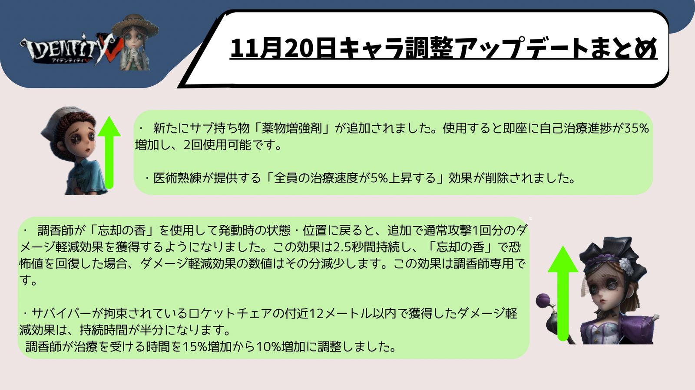
●祭司、調香師、玩具職人、教授、カウボーイ、医師、弁護士、人形師、庭師、芸者、雑貨商、漁師、泣き虫、「ビリヤードプレイヤー」に調整が入りました。
●癒合、接触効果、共感、感覚順応、気が散る、膝蓋腱反射、観客効果が調整されました。
●中毒症、飢餓、慣性、封鎖、狂暴、怒りも調整されました。
定型文のクールタイムが3秒に調整されました。
「______は位置を教えて！」の定型文が削除されました。
ハンターキャラが公開されている対戦では、「ハンターは______だ！」の定型文が削除され、スキルカテゴリにそのハンターに関連する定型文が自動的に表示されます。また、定型文でハンターキャラの変更はできません。
通常カテゴリに新しい定型文「進捗の多い暗号機はどこ？」が追加されました。
サバイバーが天賦「フライホイール効果」を携帯している時、スキルカテゴリに定型文「フライホイール効果クールタイム：__秒」が追加されました。クールタイムはシステムによって自動的に入力されます。
詳細はこちらログインすると衣装40%オフ割引カード獲得可能。
キャラ解放カード、記憶秘宝・旧シーズン、ランク戦保護カード獲得可能。
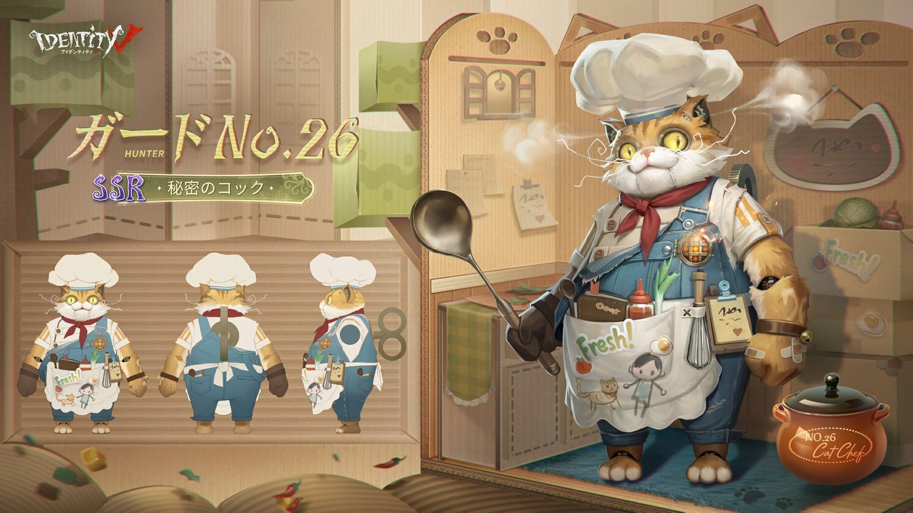
色々なタスクをこなすことで、「援助の足跡」を獲得可能！
「援助の足跡」を消費することで、【SSR衣装】ガードNo.26-秘密のコック獲得可能！
イベント詳細はこちら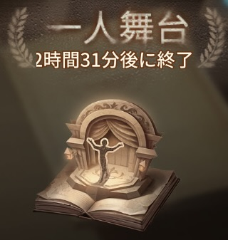
🕹️ モード概要- 1V1専用の「一人舞台」は、サバイバーができるだけ長く牽制し、ハンターがダウンを狙うトレーニング向けモード。勝敗はなく、牽制・追撃データのみが記録されます。
⚙️ システム- マップはランダム、キャラ選択後にエリアを選択。天賦は認知Pt上位100名の統計から作られたセットのみ使用可能です。
💬 対戦ルール- 対戦後は**再戦（最大10回）**が可能で、マッチングホールでチャットも可。開始60秒後から投降が可能。ハンター天賦「狩猟本能」はサバイバー4人想定で自動適用されます。
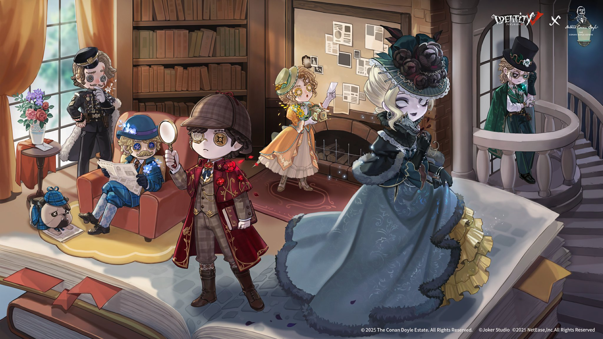
コラボポスターをシェアすると、第一弾コラボ真髄×10または霊感×800を獲得できます！
Identity V×コナン・ドイル財団コラボ第一弾が再登場
コラボパック登場、復刻も！！
コラボ詳細はこちら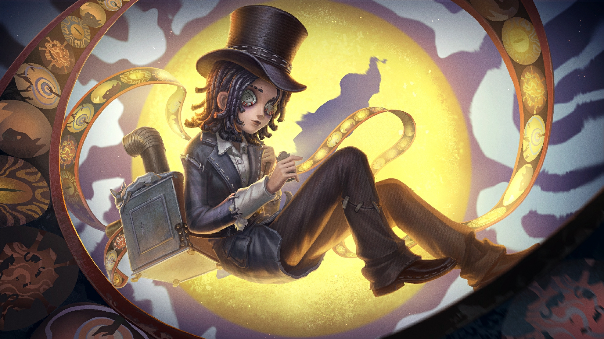
今サバイバーのサポートの中では群を抜いて強い！！パーティー必須！！
幻灯師の能力はこちら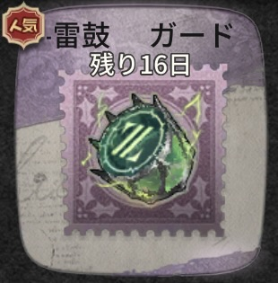
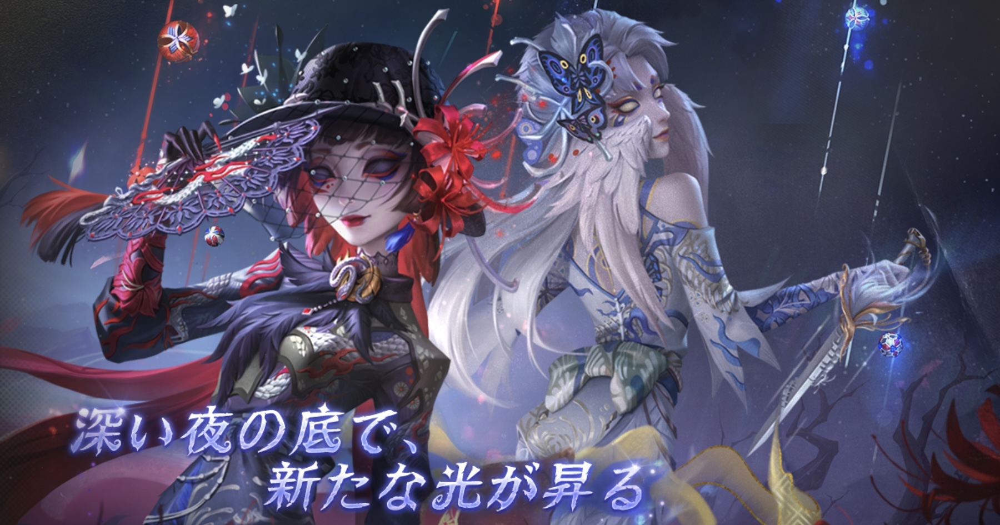
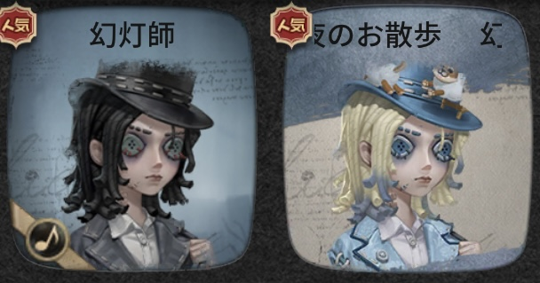
新サバイバー-幻灯師が688エコーor3568手掛かりで購入可能！
【SR衣装】幻灯師-夜のお散歩が318エコーor1188欠片で購入可能！
幻灯師の能力はこちら
S39・真髄2：幻灯師UR衣装-此岸の宴
UR衣装獲得時には、幻灯師も開放され先に使用することができるよ！
幻灯師の能力はこちら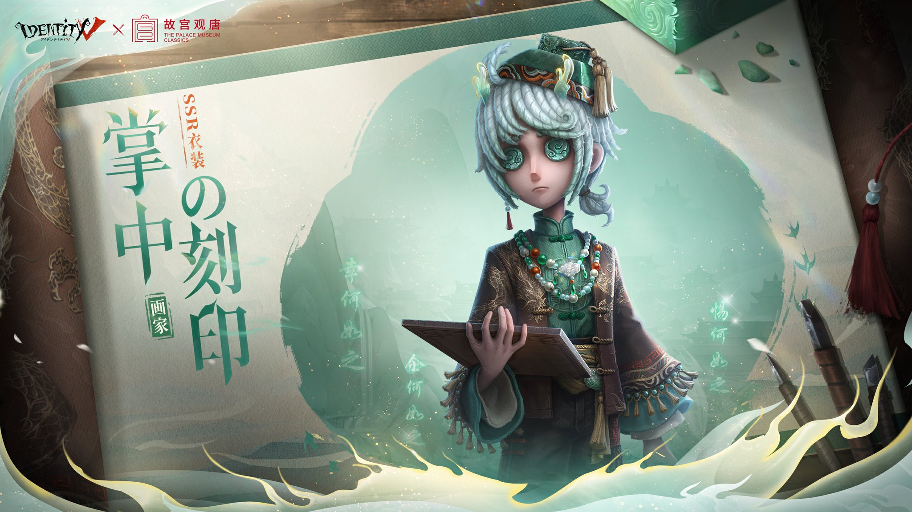
画家SSR衣装-掌中の刻印
【UR衣装】白黒無常-千里の絵巻、踊り子-鐘閣に織りなす思いが2888エコー、【UR携帯品】白黒無常-山水を行く舟、踊り子-自由の鍵1888で購入可能！
詳細はこちらなんとハンターの悪夢に変身して戦うという最強機能が追加されました！！
詳細はこちら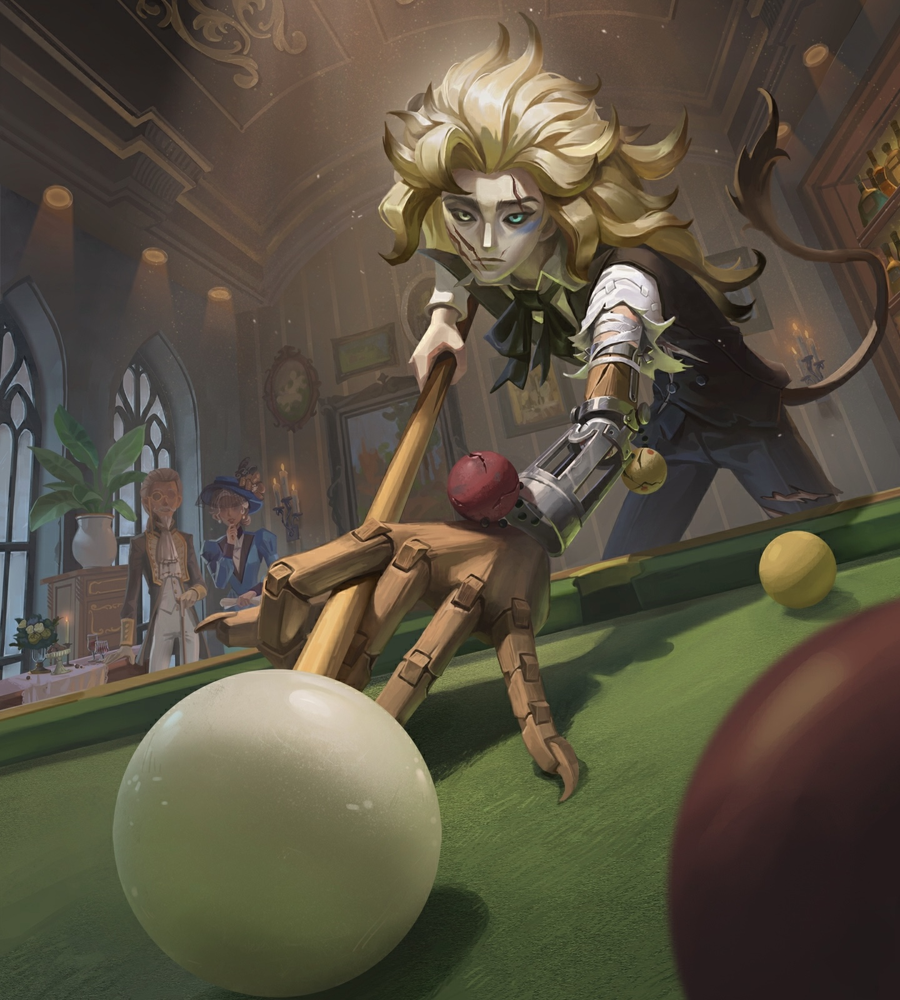
ハンター「ビリヤードプレイヤー」がランク戦モードに追加されました。
詳細はこちら●枯木を倒す、パニック、執念、中毒症、指名手配、幽閉の恐怖、掃除屋、警戒、巨大ペンチ、飢餓、避難所、観客効果が調整されました。
●足萎えの羊、フラバルー、白黒無常、破輪、昆虫学者、弁護士、脱出マスター、幸運児、応援団、患者、レディ・ファウロに調整が入りました。

パック内容：【SSR衣装】「機械技師」-BLK.TRACY、【UR携帯品】「機械技師」-超知能。
販売価格3276エコー、割引価格2618エコーでご購入可能。
【SSR衣装】「機械技師」-BLK.TRACYが1388エコーで購入可能。
【UR携帯品】「機械技師」-超知能が1888エコーで購入可能。
【SSR衣装】骨董商-破裂する音が1388エコーor4888欠片で購入可能。
詳細はこちら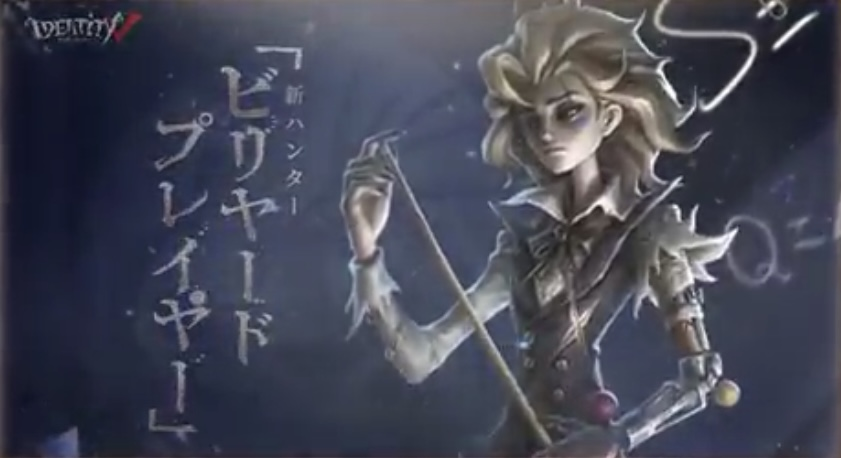
マルチ戦にビリヤードプレイヤーが登場しました！みんなで４吊しまくりましょう！
詳細はこちら「ビリヤードプレイヤー」UR衣装-「自由のリーダー」D、弓使いSSR衣装-「散乱スペクトル」R、バッツマンSSR衣装-「無効仕事」Gを含む新しい衣装が追加されます！
毎日の授業に参加し、サークルの依頼を受け、度重なる謎を解き明かすことで、象牙の塔コイン、手掛かり、欠片などを獲得できます。
イベント期間中、授業ログイン、ストーリー解放、サークル依頼を通じて最大で象牙の塔コイン×12を獲得できます。
詳細はこちら【アイコン】シーソルトモクテル、【アイコン】サマーフリスビー、【アイコン】チャンピオン舵手、動くアイコン（自由選択）、記憶秘宝、ランク戦保護カード、キャラ解放カードを獲得！
毎日イベントに入ると友情の手紙を受け取ることができ、イベント期間中に友好度アイテムを使用すると、2倍の友好度を獲得できます。

【ペット】ゲリと【ペット】フレキが期間限定でショップに再登場。888エコーまたは3188衣装の残影でご購入いただけます。
詳細はこちら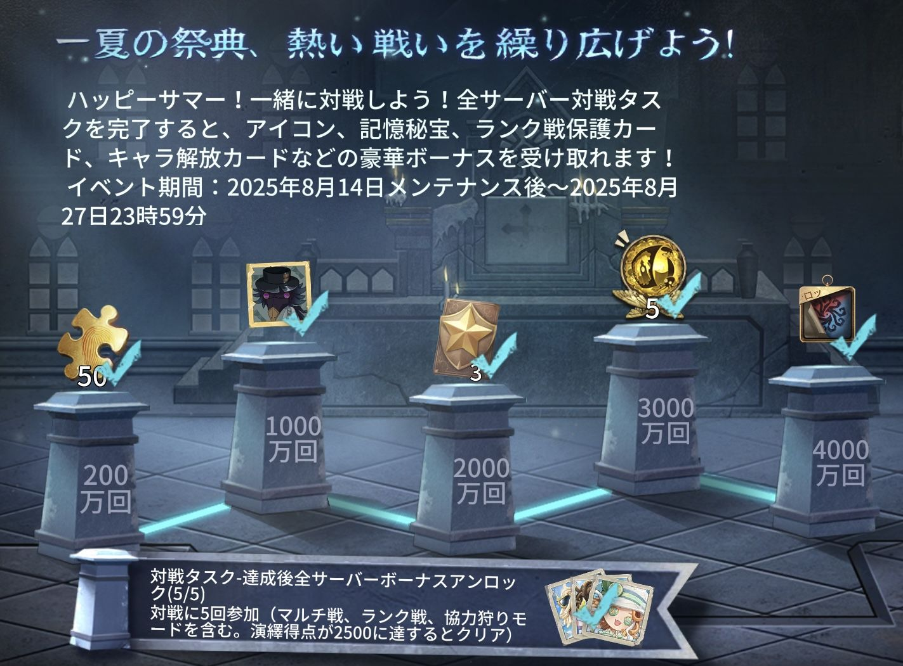
【アイコン】シーソルトモクテル、【アイコン】サマーフリスビー、【アイコン】チャンピオン舵手、動くアイコン（自由選択）、記憶秘宝、ランク戦保護カード、キャラ解放カードを獲得！
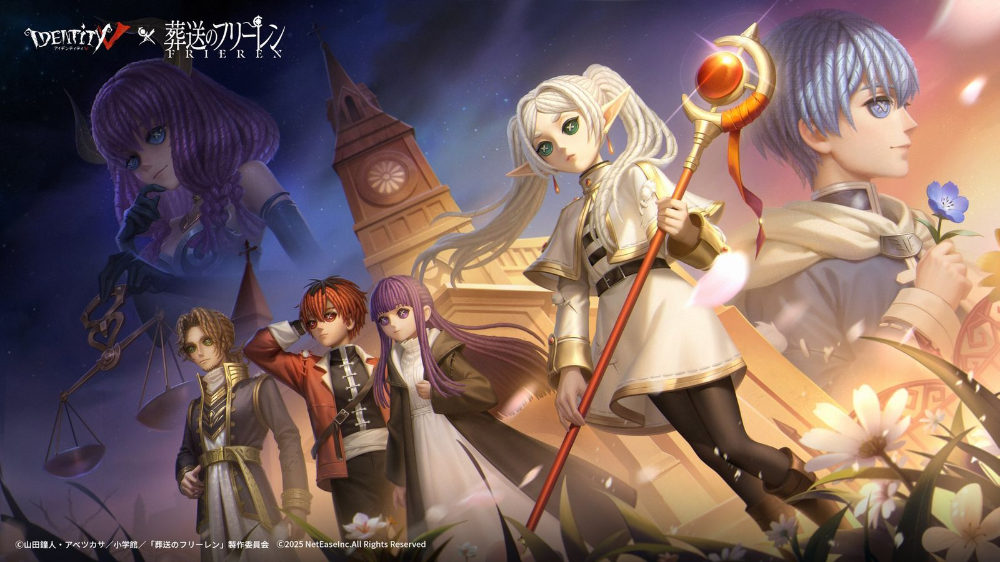
真髄には【UR衣装】気象学者-フリーレン、【SSR衣装】「心理学者」-フェルン、【SSR衣装】患者-シュタルク、【SSR衣装】祭司-アウラ
【UR衣装】「騎士」-ヒンメル、【UR携帯品】「騎士」-勇者の剣
【SSR衣装】冒険家-ザイン
SRコラボ携帯品：気象学者-魔導書
詳細はこちら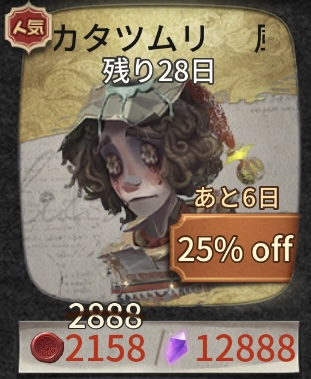
【UR衣装】泣きピエロ-風追いのカタツムリが期間限定で2888エコーまたは12888欠片でご購入いただけます。
16名のサバイバープレイヤーが2人1組のチームとなり、森の中で生き残りをかけたサバイバルバトルを繰り広げ、最後の勝者を決定します！
詳細はこちらパズルイベントを完了すると、【SR携帯品】サバイバー-パンダのぬいぐるみ、【アイコン】「VV」【アイコン枠】レッサーパンダタワーを獲得！
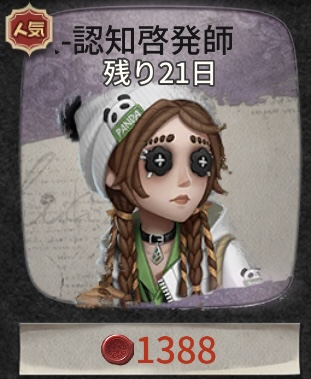
【SSR衣装】「少女」-パンダの仲間、医師-竹林の守護者、墓守-庭園デザイナーが期間限定で再登場。1388エコーでご購入いただけます。
「先駆の鍵」を100本消費することで対応するイベントボーナスを獲得できます。
【SSR衣装】庭師-星を越えてを獲得できます。
詳細はこちら
みんなのコメント